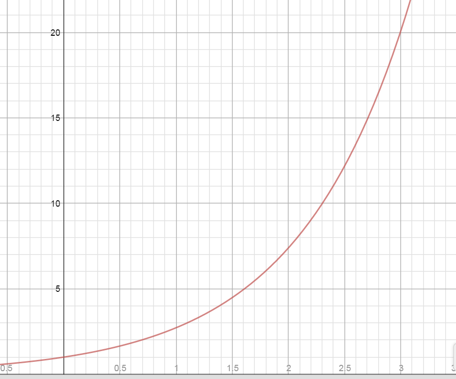

2.2 Derivatives of Exponential and Logarithmic Functions
Pre-Class:
- Complete 2.1 Homework assignment: check and correct.
- Take notes on the videos and readings (use the space below).
- Work and check problems #1-4 in the 2.2 NOTES section.
- Complete the 2.2 Pre-Class Quiz.
Introduction
Finding the derivative of $f(x) = {e^x}$

| x | f(x)=e^x |
|---|---|
| 0 | 1 |
| 1 | 2.7183 |
| 2 | 7.3891 |
| 3 | 20.086 |
| 4 | 54.598 |
| 5 | 148.41 |
| 6 | 403.43 |
-
Calculate the slope of the secant line for each of the following intervals for the function $f(x) = {e^x}$.
- [1, 3]
$\frac{{{e^{3}} - {e^1}}}{{3 - 1}} =$ $8.68$
- [1, 2]
$\frac{{{e^{2}} - {e^1}}}{{2 - 1}} =$ $ 4.67$
- [1, 1.5]
$\frac{{{e^{1.5}} - {e^1}}}{{1.5 - 1}} = $ $3.53$
- [1, 3]
-
What does the slope of the secant line represent?
The slope of the secant line represents the average rate of change.
-
Draw a tangent line at the point on the graph corresponding to x = 1 and calculate the slope.
(1, 1.00001)
$\frac{{{e^{1.00001}} - {e^1}}}{{1.00001 - 1}} =$ $ 2.7182$
-
What does the slope of the tangent line represent?
The slope of the tangent line represents instantaneous rate of change.
-
Compare the values of $f(1)$and$f'(1)$. What do you notice?
$f(1) = {e^1} = 2.71828$
$f'(1) = 2.71828$
$f(x) = {e^x}$
$f'(x) = {e^x}$
The function and the derivative are the same.
Finding the derivative of$\;f\left( x \right) = lnx$
-
Try to find the derivative of $f\left( x \right) = lnx$ using the limit definition of the derivative, $\underset{h\rightarrow0}{lim}\frac{f(x+h)-f(x)}h$.
$\underset{h\rightarrow0}{lim}\frac{ln(x+h)-ln(x)}h$
This is impossible for us to do algebraically. Let's try a table.
-
Complete the table below to try to find the derivative of $f\left( x \right) = lnx$.
(Use your calculator and let h=0.00001 to represent h→0)
$$x$$ $$\frac{\ln \left( x+h \right)-lnx}{h}$$ $$\underset{h\to 0}{\mathop{\lim }}\,\frac{\ln \left( x+h \right)-lnx}{h}$$ 1 $$\frac{\ln \left( 1+0.00001 \right)-ln1}{0.00001}$$ 1 2 $.5=\frac12$
3 $.33=\frac13$
4 $.25=\frac14$
5 $.2=\frac15$
-
Based on your results what do you think the rule for the derivative of $f\left( x \right) = lnx$ is?
$f(x) = \ln x$
$f'(x) = \frac{1}{x}$
Notes
Derivatives of Exponentials and Logarithms
$\quad \quad \frac d{dx}e^x=e^x$
$\quad \quad \frac d{dx}b^x=b^x\ln b\;\quad \quad (b>0,\;b\neq1)$
$\quad \quad \frac d{dx}\ln x=\frac1x\;\quad \quad (x>0)$
$\quad \quad \frac d{dx}\log_bx=\left(\frac1{\ln b}\right)\left(\frac1x\right)\;\quad \quad (x>0,\;b>0,\;b\neq1)$
-
Find $f'\left( x \right)$ when $f(x) = 3{x^3} + 4{x^2} - 5x + 8.$
$f'(x) = 9{x^2} + 8x - 5$
-
Find $f'\left( x \right)$ when $f\left( x \right)\; = \;\;\ln x\; - {x^3}\;\; + 2x+e^x.$
$f'(x) = \frac{1}{x} - 3{x^2} + 2+e^x$
-
Find $f'\left( x \right)$ when $f\left( x \right)\; = \;\;4\ln x\; +5e^x\;\; - 7x^2.$
$f'(x) = \frac{4}{x} + 5e^x - 14x$
-
Find $f'\left( x \right)$ when $f\left( x \right)\; = \;\;\ln {x^8}\; - 3\ln x\;.$
$f(x)=8\ln x-3\ln x$
$f'(x) = \frac{8}{x} - \frac{3}{x}$
$f'(x) = \frac{5}{x}$
Properties of Logarithms:
Use appropriate properties of logarithms to expand $f\left( x \right)$ and then find $f'(x)$.
-
$f\left( x \right) = 9 + 5\;\ln \frac{1}{x}$
$f(x)=9 + 5(\ln 1 - \ln x)$
$f(x)=9 + 5\ln 1 - 5\ln x$
$f'(x) = 0 + 0 - \frac{5}{x}$
$f'(x) = - \frac{5}{x}$
-
$f\left( x \right) = x - 2\;\ln (5x)$
$f(x) = x - 2(\ln 5 + \ln x)$
$f(x) = x - 2\ln 5 - 2\ln x$
$f'(x) = 1 - 0 - \frac{2}{x}$
$f'(x) = 1 - \frac{2}{x}$
Tangent Lines:
Find the equation of the line tangent to the graph of $f$ at the indicated value of x.
-
$f\left( x \right) = {e^x}\; + 2 \quad at \quad x = 0$
Point: $\quad f(0) = {e^0} + 2 = 1 + 2 = 3$
$(0,3)$
$f'(x) = {e^x}$
Slope: $\quad {m_{tan}}=f'(0) = {e^0} = 1$
${m_{tan}}=1$
$y - 3 = 1(x - 0)$
$y - 3 = 1x - 0$
$y = 1x + 3$
$y = x + 3$
-
$f\left( x \right) = 1\; + \ln {x^6} \quad at \quad x = e$
$f(x)=1+6lnx$
Point: $\quad f(e) = 1 + 6\ln e = 1 + 6(1) = 7$
$(e,7)$
$f(x) = 1 + 6\ln x$
$f'(x) = 0 + \frac{6}{x}$
Slope: $\quad {m_{tan}}=f'(e) = \frac{6}{e}$
${m_{tan}}= \frac{6}{e}$
$y - 7 = \frac{6}{e}(x - e)$
$y - 7 = \frac{6}{e}x - 6$
$y = \frac{6}{e}x + 1$
Applications:
-
The estimated resale value R (in dollars) of a company car after t years is given by $$R\left( t \right) = 24000{\left( {0.84} \right)^t}$$ What is the instantaneous rate of depreciation (in dollars per year) after:
- 1 year?
- 2 years?
- 3 years?
$R'(t) = 24,000{\left( {.84} \right)^t}\;(\ln .84)$
$R'(1) = 24,000{\left( {.84} \right)^1}\;(\ln .84) = - \$3514.96/yr$
The instantaneous rate of depreciation after 1 year is $3514.96 per year.
$R'(2) = 24,000{\left( {.84} \right)^2}(\ln .84) = - \$2952.57/yr$
The instantaneous rate of depreciation after 2 years is $2952.57 per year.
$R'(3) = 24,000{\left( {.84} \right)^3}(\ln .84) = - \$2480.16/yr$
The instantaneous rate of depreciation after 3 years is $2480.16 per year.